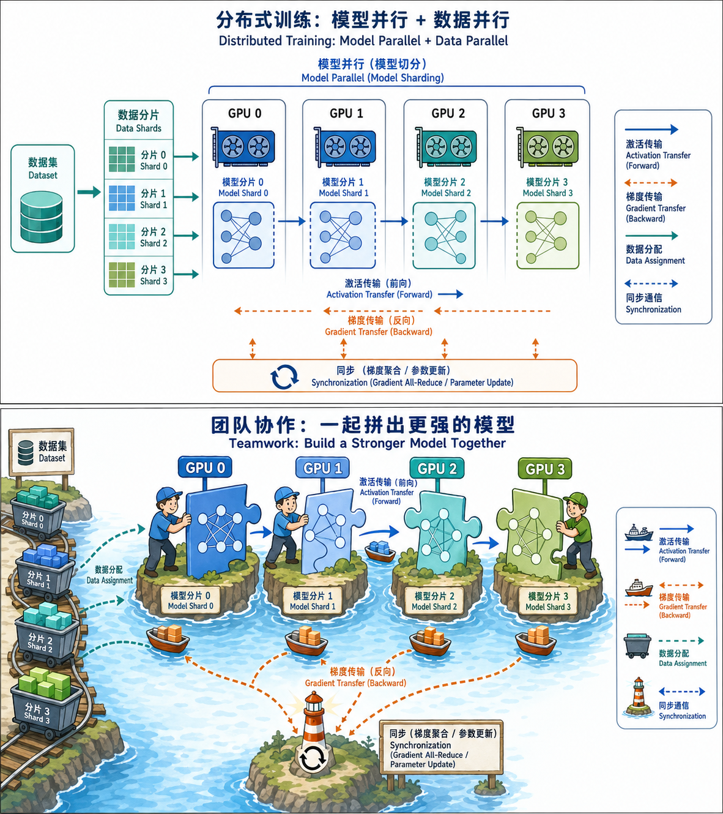

分布式训练
前置知识：05 GPT系列深度解析
为什么大模型训练需要拆开算
为什么需要分布式训练？
一个直觉：GPT-3 有 175B 参数，每个参数用 FP16（2字节）存储就需要 350GB。而 2024 年最好的单张 GPU（H100 80GB）也只有 80GB 显存。模型本身都放不进一张卡，更别说训练时还需要存梯度、优化器状态。
粗略估算训练时的显存占用：
模型参数: 175B × 2B = 350 GB (FP16)
梯度: 175B × 2B = 350 GB (FP16)
Adam 优化器状态: 175B × 8B = 1400 GB (FP32 参数副本 + 一阶/二阶矩)
──────────────────────────────────
总计: ≈ 2.1 TB2.1TB 显存——即使用 8 张 H100（80GB × 8 = 640GB），朴素地复制模型到每张卡也装不下。这就是分布式训练要解决的核心问题。

三种基本策略
┌─────────────────────────────────────────────────────┐
│ 分布式训练策略 │
├─────────────┬─────────────────┬─────────────────────┤
│ 数据并行 │ 模型并行 │ ZeRO 优化 │
│ (DDP) │ (张量/流水线) │ (切分冗余状态) │
│ │ │ │
│ 每卡完整模型 │ 模型切成多块 │ 优化器/梯度/参数 │
│ 数据不同 │ 每卡一块 │ 分散到多卡 │
└─────────────┴─────────────────┴─────────────────────┘- 数据并行：模型小到放得下单卡时，复制模型到每张卡，每卡处理不同数据，最后同步梯度
- 模型并行：模型太大放不下单卡时，把模型切开，分到不同卡上
- ZeRO：不切模型计算图，而是切"冗余的状态"（优化器状态、梯度、参数），需要时再通信取回
分布式训练的主要策略
1. 数据并行 (Data Parallelism / DDP)
核心思想：N 张卡各持有模型的完整副本，每张卡处理 batch_size / N 条数据，前向反向各自计算，然后 AllReduce 同步梯度，保证所有卡的参数更新一致。
AllReduce 操作：
GPU 0: grad_0 ──┐
GPU 1: grad_1 ──┼── AllReduce ──→ 每张卡都得到 mean(grad_0, grad_1, ..., grad_N)
GPU 2: grad_2 ──┤
GPU N: grad_N ──┘AllReduce 通常用 Ring-AllReduce 实现：N 张卡排成环，每张卡只与左右邻居通信，通信量为 2 × (N-1)/N × 模型大小，约等于 2 × 模型大小，与卡数无关。
DDP vs 旧版 DataParallel：
| 特性 | DataParallel (DP) | DistributedDataParallel (DDP) |
|---|---|---|
| 进程模型 | 单进程多线程 | 多进程（每卡一个） |
| 通信 | 主卡收集梯度 | Ring-AllReduce |
| GIL 瓶颈 | 有（Python GIL） | 无 |
| 负载均衡 | 主卡瓶颈 | 均衡 |
| 推荐程度 | 不推荐 | 标准方案 |
数学上：DDP 等价于在全局 batch 上计算梯度。设全局 batch 为 $B$，分到 $N$ 张卡，每卡 batch 为 $b = B/N$：
每卡先计算局部平均梯度，AllReduce 再取全局平均——数学上完全等价。
2. 张量并行 (Tensor Parallelism)
核心思想：把单个层（如线性层、注意力层）内部的矩阵运算按维度切开，分配到不同 GPU 上并行计算。
以线性层 $Y = XA$ 为例：
将权重矩阵 $A$ 按列切分为 $[A_1, A_2]$，分到 2 张 GPU：
GPU 0: Y_0 = X × A_0 (A 的前半列)
GPU 1: Y_1 = X × A_1 (A 的后半列)
结果: Y = [Y_0, Y_1] (拼接)MLP 层的张量并行（Megatron-LM 方案）：
MLP: Y = Dropout(GeLU(X × A) × B)
Step 1: 将 A 按列切分
GPU 0: Z_0 = GeLU(X × A_0)
GPU 1: Z_1 = GeLU(X × A_1)
Step 2: 将 B 按行切分
GPU 0: Y_0 = Z_0 × B_0
GPU 1: Y_1 = Z_1 × B_1
Step 3: AllReduce
Y = Y_0 + Y_1关键技巧：GeLU 是非线性，不能先加再激活，所以必须先列切 A → 各自 GeLU → 再行切 B → AllReduce。这让每个 MLP 层只需要 一次 AllReduce（加上前面的一次 broadcast，共 2 次集合通信）。
注意力层的张量并行：
多头注意力天然适合张量并行！
GPU 0: head_0, head_1, ..., head_{h/2-1} (前一半注意力头)
GPU 1: head_{h/2}, ..., head_{h-1} (后一半注意力头)
各自计算完 → 输出投影矩阵 W_O 按行切分 → AllReduce优点：层内计算完全并行，没有"等上一层算完"的问题 缺点：通信在层内，要求 GPU 之间极高带宽（通常限制在同一节点的 NVLink 连接内）
3. 流水线并行 (Pipeline Parallelism)
核心思想：把模型按层切分，每组连续的层放到一张 GPU 上，数据像流水线一样依次流过。
GPU 0: 层 0~23 GPU 1: 层 24~47 GPU 2: 层 48~71 GPU 3: 层 72~95
数据流: Input → GPU0 → GPU1 → GPU2 → GPU3 → Loss
反向: Loss → GPU3 → GPU2 → GPU1 → GPU0朴素流水线的问题——气泡 (Bubble)：
时间 →
GPU 0: [F0][ 等 ][ 等 ][ 等 ][B0]
GPU 1: [F1][ 等 ][ 等 ][B1]
GPU 2: [F2][ 等 ][B2]
GPU 3: [F3][B3]
F = Forward, B = Backward
大量时间在等待 → 利用率很低！微批次 (Micro-batch) 流水线：把一个 mini-batch 切成多个 micro-batch，像流水线一样填满各个阶段。
GPipe 方案：先跑完所有 micro-batch 的前向，再跑反向。
GPU 0: [F0][F1][F2][F3][ ][B3][B2][B1][B0]
GPU 1: [F0][F1][F2][F3][B3][B2][B1][B0]
GPU 2: [F0][F1][F2][F3][B3][B2][B1][B0]
GPU 3: [F0][F1][F2][F3][B3][B2][B1][B0]1F1B 方案（PipeDream）：前向和反向交替执行，进一步减少气泡。
GPU 0: [F0][F1][F2][F3][B0][F4][B1][F5][B2]...
GPU 1: [F0][F1][F2][B0][F3][B1][F4][B2]...
GPU 2: [F0][F1][B0][F2][B1][F3][B2]...
GPU 3: [F0][B0][F1][B1][F2][B2]...气泡比例：设流水线阶段数为 $p$，micro-batch 数为 $m$，气泡时间占比约为：
当 $m \gg p$ 时气泡趋近于零。实践中通常 $m \geq 4p$。
4. ZeRO 优化 (Zero Redundancy Optimizer)
核心洞察：在数据并行中，每张卡都持有完整的优化器状态、梯度和参数——这是巨大的冗余。能否把这些状态也"切开"分到不同卡？
三个阶段：
| 阶段 | 切分内容 | 显存节省（相对DDP） | 通信量 |
|---|---|---|---|
| ZeRO-1 | 优化器状态 | 4x | = DDP |
| ZeRO-2 | + 梯度 | 8x | = DDP |
| ZeRO-3 | + 模型参数 | 线性于 N | 1.5x DDP |
ZeRO-1：每张卡只存 $1/N$ 的优化器状态。
传统 DDP (N=4):
每卡: 全部参数(FP16) + 全部梯度(FP16) + 全部优化器状态(FP32×3)
每卡优化器显存: 175B × 12B = 2.1TB / 4 × 4 = 2.1TB (没省！每卡都完整)
ZeRO-1 (N=4):
每卡: 全部参数(FP16) + 全部梯度(FP16) + 1/4 优化器状态(FP32×3)
优化器显存: 175B × 12B / 4 = 525GB / 4 = 131GB/卡ZeRO-2：再把梯度也切分。反向传播时，一个梯度算完就 Reduce-Scatter 到负责的卡，其他卡丢弃。
ZeRO-3：连模型参数也切分。需要某层参数时，All-Gather 临时拿到完整参数，用完就丢。
ZeRO-3 前向过程:
for layer in model.layers:
All-Gather(layer.params) # 临时集齐完整参数
output = layer.forward(input) # 前向计算
丢弃非本卡负责的参数 # 释放显存ZeRO-3 通信量分析：
- 前向：每层一次 All-Gather → $\Psi$ 字节
- 反向：每层一次 All-Gather + 一次 Reduce-Scatter → $2\Psi$ 字节
- 总计：$3\Psi$（DDP 的 AllReduce 是 $2\Psi$），多了 50% 通信，但显存降到 1/N
5. 3D 并行
重要澄清：3D 并行不是一种新的并行类型，而是数据并行 + 张量并行 + 流水线并行三种已有策略的组合。"3D"指的是三个维度的并行策略同时使用，每种策略解决不同层面的问题，组合后各取所长。
核心思想：将数据并行、张量并行、流水线并行组合起来，各取所长。
典型配置 (64 GPU 训练):
- 张量并行 (TP=4): 同一节点内 4 张 GPU，NVLink 高带宽互连
- 流水线并行 (PP=4): 4 个节点，每节点放模型的 1/4 层
- 数据并行 (DP=4): 4 组相同配置，各自处理不同数据
总 GPU: TP × PP × DP = 4 × 4 × 4 = 64为什么这样分配：
通信量从大到小: 张量并行 > 数据并行 > 流水线并行
带宽从高到低: NVLink(节点内) > InfiniBand(节点间)
所以:
- 张量并行 → 放在节点内 (NVLink, ~600 GB/s)
- 流水线并行 → 放在节点间 (InfiniBand, ~200 Gb/s)
- 数据并行 → 跨所有副本 (Ring-AllReduce)Megatron-LM + DeepSpeed 的 3D 并行是目前训练超大模型的标准方案（GPT-3、Llama 等都用了类似策略）。
小结
| 策略 | 切什么 | 通信内容 | 适用场景 |
|---|---|---|---|
| DDP | 数据 | 梯度 (AllReduce) | 模型能放下单卡 |
| 张量并行 | 层内矩阵 | 激活值 | 节点内高带宽 |
| 流水线并行 | 层间 | 激活值 (点对点) | 节点间 |
| ZeRO-1 | 优化器状态 | 梯度 (AllReduce) | 省显存但不改代码 |
| ZeRO-2 | + 梯度 | 梯度 (Reduce-Scatter) | 进一步省显存 |
| ZeRO-3 | + 参数 | 参数 (All-Gather) | 模型放不下单卡 |
| 3D并行 | 以上组合 | 混合 | 超大模型训练 |
下一节：混合精度与框架 — 学习如何用半精度省显存、加速计算，以及 DeepSpeed/FSDP 的工程配置。